Analyse unpünktlicher Flüge | Los Angeles International Airport
Power BI - Business Intelligence Analytics & Reporting | 2015–2017
Der vollständige Weg von den Bedingungen bis zu den Handlungsempfehlungen
Diskussionsgrundlage für den Flughafenbetreiber fLAirport
Routinemäßige Analyse der Verspätungen
Unpünktliche Flüge am größten Flughafen der Gesellschaft, dem Los Angeles International Airport, sollen routinemäßig untersucht werden. Um über verschiedene Abteilungen hinweg die gleiche Diskussionsgrundlage zu haben, soll ein für alle zugänglicher Bericht erstellt werden.
In Abstimmung mit der Führungsebene wurden folgende Anforderungen an den Bericht herausgearbeitet
1.264.229 Flüge, 2015–2017
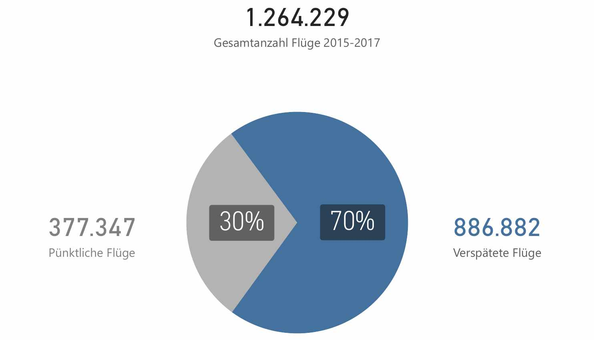
Abflug- und Ankunftsverspätungen im Vergleich
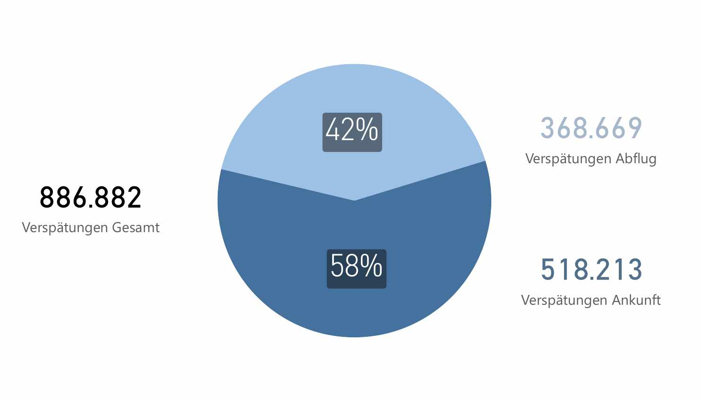
Betroffene Airlines, Steigerung, On-Time Performance und Delay Index
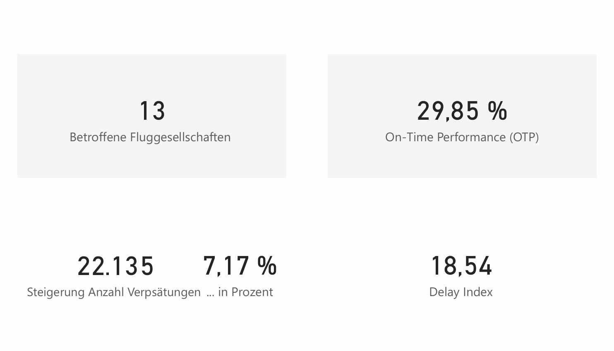
Durchschnittswerte über den gesamten Betrachtungszeitraum
13 Fluggesellschaften, Top-3-Anteil an der Gesamtverspätung
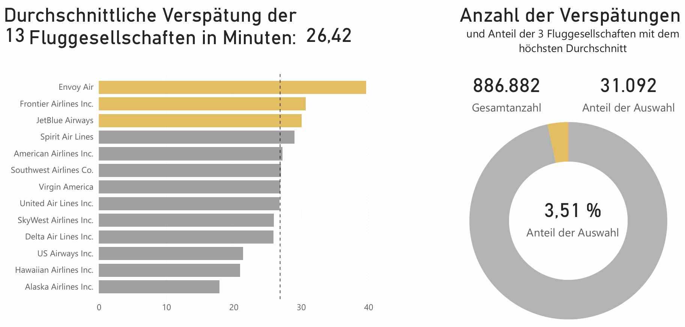
Analyse der höchsten durchschnittlichen Unpünktlichkeit
Durchschnittliche Verspätung pro Flug zeigt die Schwere der Verspätung,
nicht die Häufigkeit und den Einfluss auf den Gesamtflugverkehr
Indikator ist fragwürdig
Die höchste durchschnittliche Unpünktlichkeit erlaubt eine gewisse Verzerrung der Werte und eignet sich somit nicht zuverlässig als Indikator. Airlines mit extremen Durchschnittsverspätungen haben oft nur wenige Flüge. Ihr hoher Durchschnitt hat wenig Einfluss auf die Gesamtzahl der Verspätungen.
Der Wert ignoriert die Häufigkeit verspäteter Flüge im Verhältnis zur Gesamtzahl.
Jahre, Quartale, Monate, Tage
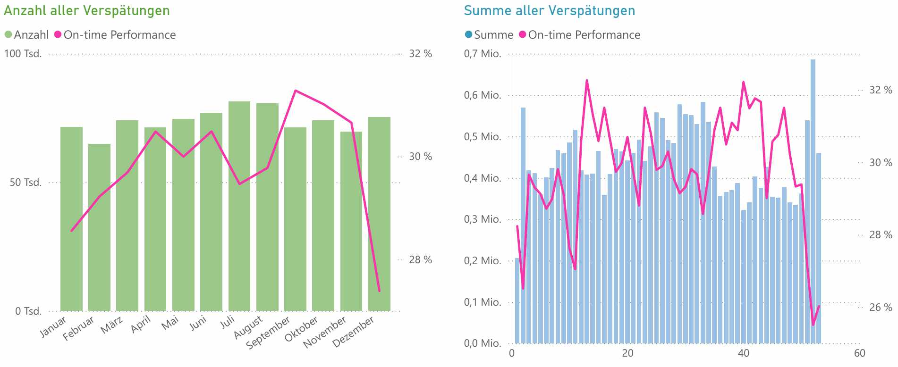
Jahre, Quartale, Monate, Tage im Verlauf
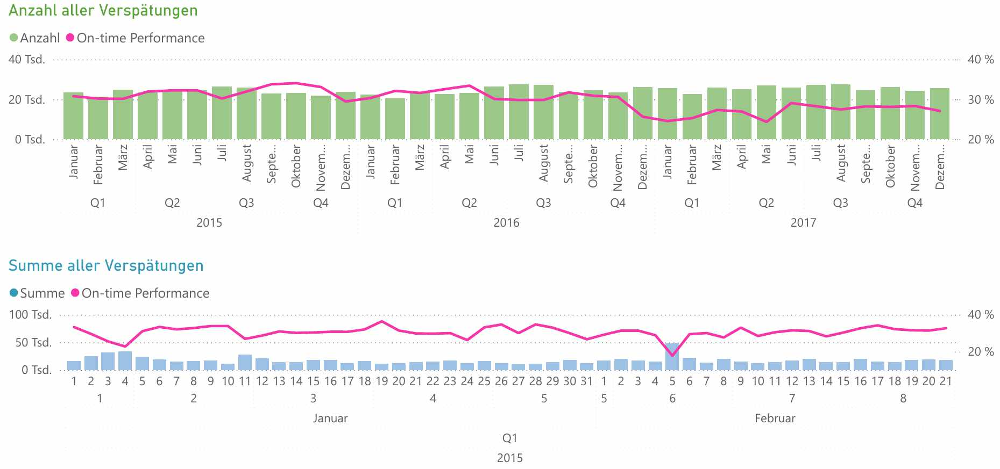
Anzahl und Summe nach Wochentag, mit On-Time Performance
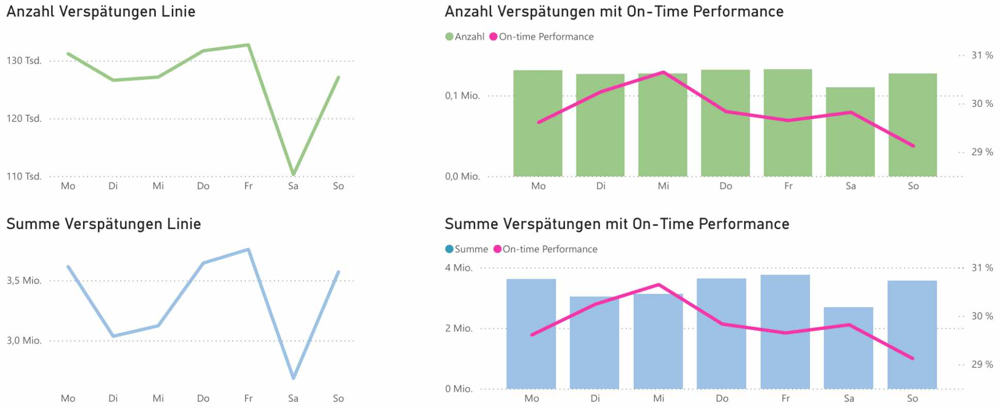
Verlauf nach Uhrzeit (0–23 Uhr)
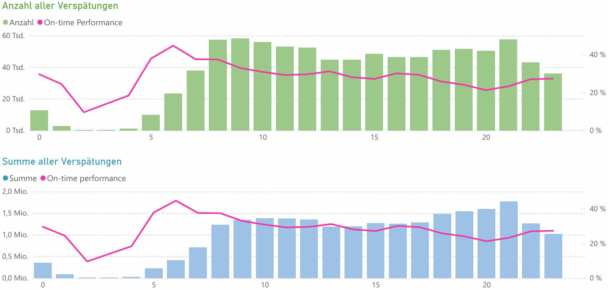
Erkenntnisse aus den langfristigen und kurzfristigen Mustern im Überblick
Drei konkrete Hebel für Planung, Ursachenforschung und Messung
Drei konkrete Hebel für Planung, Ursachenforschung und Messung
Was die vier zusätzlichen Airline-Ansichten sichtbar machen
OTP je Airline (statt nur gesamt) zeigt: Die On-Time Performance schwankt zwischen den 13 Fluggesellschaften spürbar zwischen rund 22 % und 34 % — eine Ebene, die die aggregierte 29,85-%-Kennzahl verdeckt.
Das reine Anzahl-Ranking (Southwest Airlines an der Spitze) zeigt ein anderes Bild als das Ø-Verspätungs-Ranking aus Kapitel 'Analyse Verspätungen' (Envoy Air an der Spitze) — bestätigt noch einmal, dass die Rangfolge stark vom gewählten Indikator abhängt.
Delay Index (Ø 19,23) und Delay Rate (Ø 71,33 %) kombinieren Häufigkeit und Schwere zu je einer Kennzahl — genau die Art Kombinationsindikator, die die Empfehlung 'Indikator verbessern' fordert.
Anzahl und Summe der Verspätungen je Fluggesellschaft, mit On-Time Performance
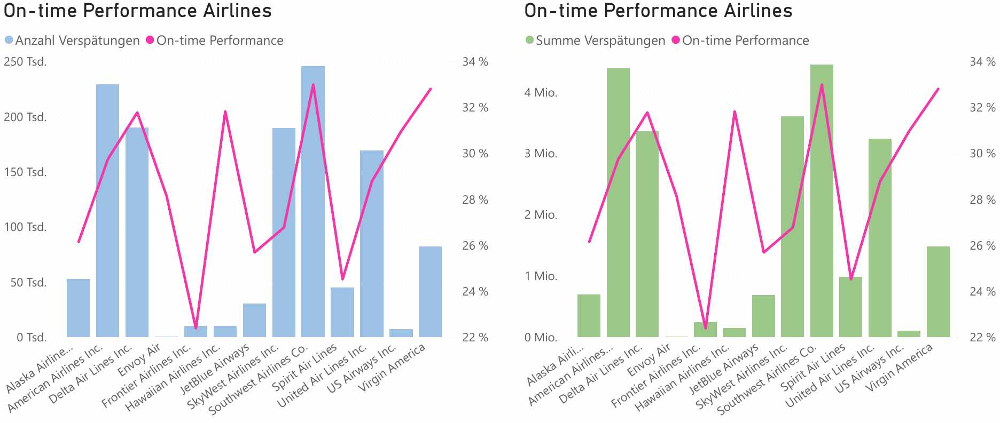
Alle 13 Fluggesellschaften im direkten Vergleich
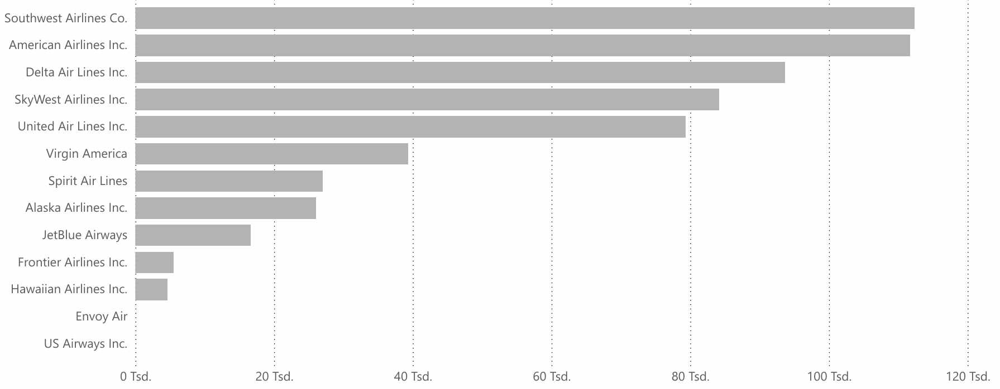
Kombinierter Kennwert aus Häufigkeit und Schwere je Airline
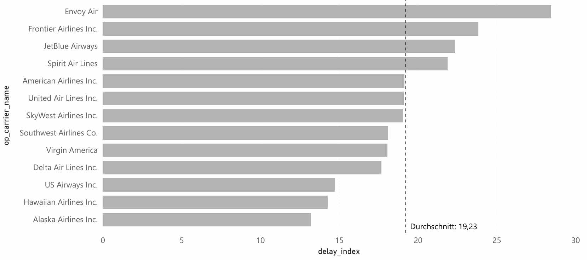
Anteil verspäteter Flüge an der airline-eigenen Gesamtzahl
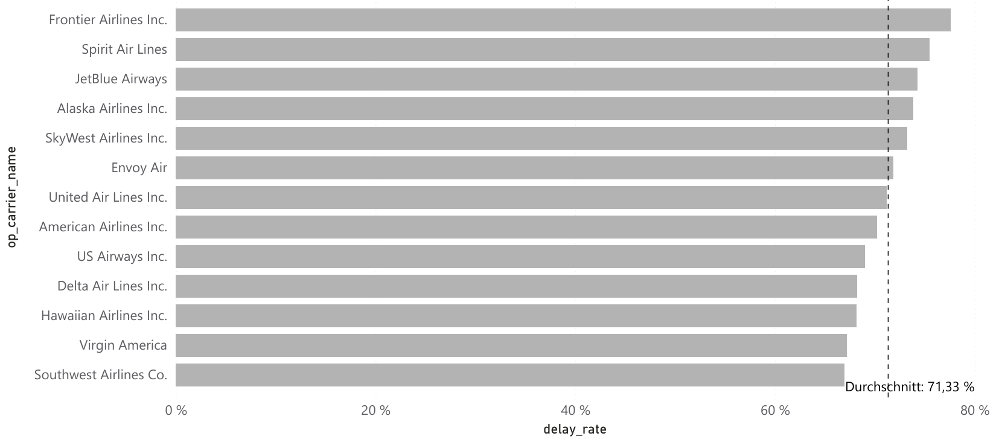
Analyse unpünktlicher Flüge | Los Angeles International Airport
Power BI - Business Intelligence Analytics & Reporting | 2015–2017
Der richtige Indikator entscheidet
Naheliegende Kennzahlen greifen oft zu kurz. Für die operative Planung sind saisonale und wochentägliche Muster verlässlicher als die Ø-Verspätung einzelner Airlines.
Kombinierte Metriken, wie der gewichtete Leistungsindikator, bilden Häufigkeit und Intensität gleichzeitig ab. Ein reiner Durchschnitt zeigt dagegen nur eine Dimension.